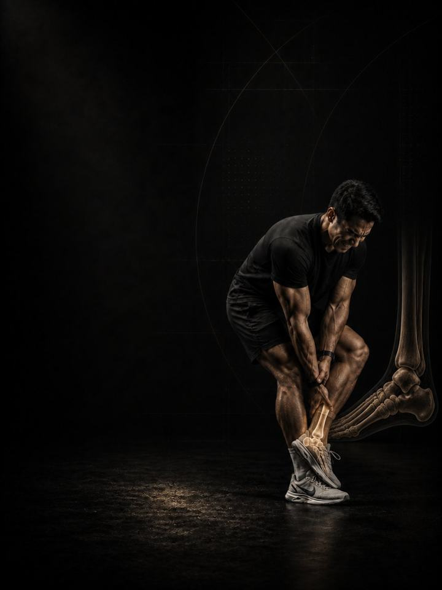

Ankle & Foot Pain
Restore ankle range, rebuild calf and foot capacity, and retrain the balance a sprain takes away.
- Built foranyone with an ankle that keeps rolling, or heel and Achilles pain that keeps returning
- Schedulea 10–15 minute daily routine, plus 3 strength days a week
- Equipmentdaily routine needs a mat and a band. Strength days need a full gym.
- Formatmobile PDF, every exercise linked to a demo video
The store opens soon. For now, Buy opens an Instagram message and you receive the PDF there.
Why ankle pain keeps coming back
Ankles get treated as disposable. You roll one, it swells, it settles, and you go back to sport. That is exactly why up to seven in ten people who sprain an ankle sprain it again.
A sprain damages more than tissue. It blunts the joint's sense of position, so the ankle stops correcting itself in the split second before it rolls. Stubborn heel and Achilles pain works the same way: it is almost always a capacity problem in the calf and foot. This program rebuilds all three things a recurring ankle is short on: range, strength and balance.
Your week
A short daily routine, plus three strength days at the gym. Any three days work, as long as they are not back to back. One example:
| Sun | Mon | Tue | Wed | Thu | Fri | Sat |
|---|---|---|---|---|---|---|
| Day 1 + daily routine | Daily routine | Day 2 + daily routine | Daily routine | Day 3 + daily routine | Daily routine | Daily routine |
How it runs:
- Test first. Four tests before week 1, repeated after weeks 3 and 6.
- Daily routine, 10–15 min. Seven movements, every day. On strength days it doubles as the warm-up.
- Strength days. Days 1, 2 and 3, done in order.
The five patterns behind most ankle and foot pain
An ankle that keeps hurting or keeps rolling is not unlucky. It is under-built somewhere specific, and these five patterns are where the gaps hide. They compound: a stiff ankle overloads the calf, a weak calf overloads the tendon, and a blunted sense of position rolls the whole thing again. Fixing them together works far better than chasing one.
-
Stiff ankle (limited dorsiflexion). The shin can't travel forward over the foot, so squats, running and stairs all borrow range from the knee and hip. It is the most common leftover from an old sprain, and the easiest to measure and improve. In the program: Ankle Mobilisation, Kneeling Dorsiflexion, Deep Squat Hold
-
Weak calf and Achilles. The calf takes the first hit of every step and every landing. Untrained, it tires early and passes the load to the Achilles, which answers with morning stiffness and pain that warms up, then returns after activity. In the program: Calf Raises, Single-Leg Calf Raise (loaded), Hops
-
Poor balance after a sprain. A sprain damages the joint's position sense, not just the ligament. The ankle stops making the small automatic corrections that keep it under you, which is why the second sprain usually happens on flat ground. In the program: Single-Leg Balance, Hops, Lateral Bounds
-
Weak foot and arch. The small muscles inside the foot control the arch on every step. When they are quiet, the arch collapses late in a run, the heel takes the strain, and pain under the foot follows. In the program: Short Foot, Single-Leg Balance, Calf Raises on Hack Squat
-
Weak shin muscle and stiff big toe. The muscle down the front of the shin controls the foot as it lands, and the big toe has to bend back for you to push off. Weak or stiff here, and shin splints, heel pain and a poor push-off all become likely. In the program: Tibialis Raises, Banded Dorsiflexion, Power Sled Push
Your pattern adds. The PDF lists extra exercises for each pattern. Add the ones for the patterns that sound most like you at the end of each strength day, at 3 sets each.
How the 6 weeks progress
The daily routine stays the same for all six weeks. The strength days move up a level every two weeks.
| Weeks 1–2 | Weeks 3–4 | Weeks 5–6 | |
|---|---|---|---|
| Phase | Control | Build | Integrate |
| Focus | Range and balance | Heavy, slow calf work | Hopping and cutting |
| Working sets per week | 54 | 57 | 54 |
Average effort is about 6.5 out of 10 in weeks 3–4 and 7 in weeks 5–6. That scale is RPE, a 1–10 rating of how hard a set feels: 6.5 leaves about 3 to 4 reps in the tank, and 7 leaves about 3.
The rules that make it work
- The work climbs as the ankle earns it. Range and balance first, then heavy calf work, then hopping and cutting. Each phase lasts two weeks.
- The daily routine is the medicine. The strength days are the training. The routine does not change, so it can do its job every day.
- Keep training. The PDF has swaps for the work that outruns your current capacity, so you don't have to stop everything while the ankle rebuilds.
- Decisions follow numbers. You retest after weeks 3 and 6.
How you'll measure progress
Four tests before week 1, then again after weeks 3 and 6, recorded on the score sheet in the PDF. They track the things that matter here, such as knee-to-wall ankle range, single-leg calf raises and single-leg balance.
What good progress looks like
- Weeks 1–2: morning stiffness eases and the knee-to-wall number starts moving.
- Weeks 3–4: calf raise counts climb and balance steadies.
- Weeks 5–6: hopping and cutting stop causing next-day soreness, and the ankle stops feeling like it might go.
If nothing has moved by the week 3 retest, get a professional assessment instead of pushing harder.
Finishing standard at week 6: 2/10 pain or less on stairs and push-off for two straight weeks, 20 single-leg calf raises, knee-to-wall at 10 cm or better on both sides, and single-leg balance held for 30 seconds with eyes open and 10 seconds with eyes closed.
Feet on the ground
Spend part of every day barefoot at home, and walk 20–30 minutes on most days. Cushioned shoes do the foot's job for it, so time out of them is free training for the arch and the small muscles that hold it. Build up gradually if your feet are not used to it. Protect the two free painkillers as well: 7–9 hours of sleep and managed stress.
The science
Every program in the library is built on published research, and how strong that research is gets stated, not implied. Where the evidence is limited, the page says so.
| Finding | Source | What it does not show |
|---|---|---|
| Strength training cuts sports injuries to under a third of the control rate. Stretching does not reduce them. | Lauersen, Bertelsen & Andersen, British Journal of Sports Medicine 2014. Meta-analysis of 25 randomised trials, 26,610 participants. PMID 24100287 | Risk ratio 0.32 for strength training and 0.96 for stretching. The trials varied a lot, and dose was not standardised. |
| Continuing to run and jump during Achilles tendon rehab, guided by a pain-monitoring rule, did not make outcomes worse. | Silbernagel, Thomée, Eriksson & Karlsson, Am J Sports Med 2007. Randomised trial, 38 patients with Achilles tendinopathy. PMID 17307888 | One tendon, one clinic, 38 patients. Both groups improved equally. It does not show that any particular pain threshold is the right one. |
| Lower-limb tendon pain responds to progressive loading. Which progression rule is best is not established. | Escriche-Escuder, Casaña & Cuesta-Vargas, BMJ Open 2020. Systematic review of 30 randomised trials in Achilles, patellar and gluteal tendinopathy. PMID 33444210 | Progressing on pain is common practice but not strongly supported. Eccentric-only work has not been shown to be better. |
| Every sensible prescription beats not training. Heavier loads rank highest for strength. | Currier, McLeod, Banfield et al., British Journal of Sports Medicine 2023. Network meta-analysis, 178 strength and 119 hypertrophy studies. PMID 37414459 | The differences between prescriptions were small, and all of them worked. |
| Strength keeps improving as weekly sets rise, with diminishing returns. Training more often reliably helps strength. | Pelland, Remmert, Robinson, Hinson & Zourdos, Sports Medicine 2025. Meta-regressions, 67 studies, 2,058 participants (79% male). PMID 41343037 | How sets were counted (direct or indirect) changes the numbers considerably. |
What's next
After 6 weeks:
- The knee still complains: Knee Pain
- Build strength and muscle: Foundation Strength
- Train like an athlete: Athletic Development
- Another area needs work: the Corrective series
Before you buy: get cleared first if
- You have chest pain, unusual breathlessness, palpitations or dizziness with exertion.
- You have uncontrolled high blood pressure, a known heart condition, or recent surgery.
- You are pregnant or recently post-partum. Get clearance and a tailored program first.
- Your pain started with a specific injury (a pop, the joint giving way, or swelling within hours), or you have numbness, weakness, fever or pain that wakes you at night.
This program is general fitness guidance. It does not replace a medical assessment.
The store opens soon. For now, Buy opens an Instagram message and you receive the PDF there.